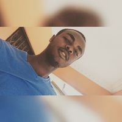

Target Audience
As the representative organ of the business community and the voice of the organised private sector in Ghana, the Chamber maintains regular consultations with government on policies and measures affecting business and the economy. It makes representations to the Government on issues of interest to the business community and the economy.
Personas
A chamber of commerce is an association or network of businesspeople designed to promote and protect the interests of its members. A chamber of commerce is often made up of a group of business owners that share a locale or interests, but can also be international in scope. Among the benefits chamber members receive are deals and discounts from other chamber members, listing in a member directory, and a variety of other programs and services designed to promote business activity in a region.
| Photo |  |
| Name | Kwadjo Owusu-Ansah Quarshie |
| Job title | Student |
| Demographics |
|
| Goals and tasks: |
He is brilliant, focused and goal-oriented. Spends his work
time:
|
| Environment: | He is comfortable using a computer and refers to himself as an intermediate Internet user. He uses email extensively and uses the web about 23 hours whiles on campus. |
Scenarios
- I love visiting zoo's on any trip I plan for.